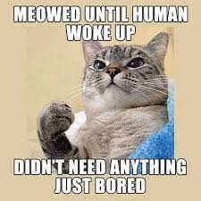

I am 21 years old and I transferred from ICC. I am part of the BFA graphic design program. I commute from Peoria where I have a house with my fiance, our two cats, and our dog. I am a trained Starbucks barista and a licensed EMT. In my free time I enjoy watching TV, playing board games, and doing home improvement projects.
Cats!
Tacos
Reese's Peanut Butter Cups
